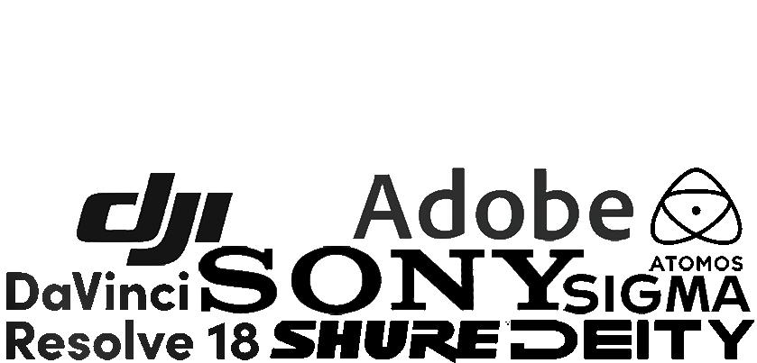

Jelmer Braad
De CineMaat.
Zelfs.naamw: /'ðə: ˈs[ɪ]nəm[a]t/'
- ○ Maker van (bewegend) beeld met hoogwaardige cinematografie.
- ○ Metgezel, partner, collega, vriend.
Bioscoopklasse beeld,
voor Jan en alle
man.
Mijn voordelen
Een nerd
als het om camera's
gaat.
Show, don't tell
Als videograaf vertel ik met 23,976 frames per seconde verhalen aan de wereld. Gewapend met mijn camera ben ik de schakel tussen jou en je publiek. Ik creëer beeld dat spreekt en inspireert. Beeld dat aanzet tot iets. Want de manier waaróp je een verhaal verteld bepaald de mate waarin je je publiek raakt.
20+
Blije klanten
6jaar
Ervaring
1001
Volle SD-kaartjes
100%
Passie
Kennis in het hele
adobe pakket.
Beeld met onbeperkte houdbaarheid.
In het online landschap veranderd alles in een oogwenk. Ik investeer daarom altijd in de nieuwste tools om bij de tijd te blijven.
Animaties, op maat.
Vanzelfsprekend. Krachtig. Mooi.
Beeld van boven.
met behulp van de nieuwste technologie
Veelzijdig portfolio.
Van interne communicatie tot aan trouwfilms en van insta-story's tot aan product showcases. Ik ben van alle markten thuis, houd van uitdagingen en ga een moeilijk concept daarom ook nooit uit de weg.
Mijn werken
Jouw verhaal,
mijn ambitie.
Over mij
Mijn grootste talent?
Perfectionisme.
Show, don't tell.
Als videograaf moet je altijd goed op de kleintjes letten. Daarom ben ik altijd op zoek naar die extra shots en loop ik maar al te graag de extra mile waardoor de video uiteindelijk een mooi resultaat krijgt. Als persoon ben ik erg prestatiegericht, wat zich zonder meer vertaald in mijn werk: Ik reken geen uurloon, ook niet voor dat ene extra uurtje editen. Deze gedrevenheid samen met de passie voor mijn vakgebied, is voor mij de formule van de cinemaat.
Met 1 been in het ondernemerschap en 2 benen in de videografie breng ik een hedendaagse en moderne look en feel aan jouw verhaal, en heb je bij mij altijd de garantie om “bij de tijd” te zijn. Alhoewel ik sta voor het laagdrempelig inzetten van de draaidagen, zorg ik ervoor dat het eindresultaat allesbehalve laagdrempelig is. Indien nodig zoek ik wél graag de diepgang op en bewerk ik een film liever vier keer opnieuw, dan één keer met afdoende resultaat.
In de huidige informatiemaatschappij speel ik als videograaf de essentiële rol in het overbrengen van jouw verhaal. Natuurlijk heeft elk verhaal een ander publiek, en past niet ieder dekseltje op ieder potje… Indien van toepassing denk en praat ik met je mee over hoe jij het beste de boodschap bij het publiek krijgt.